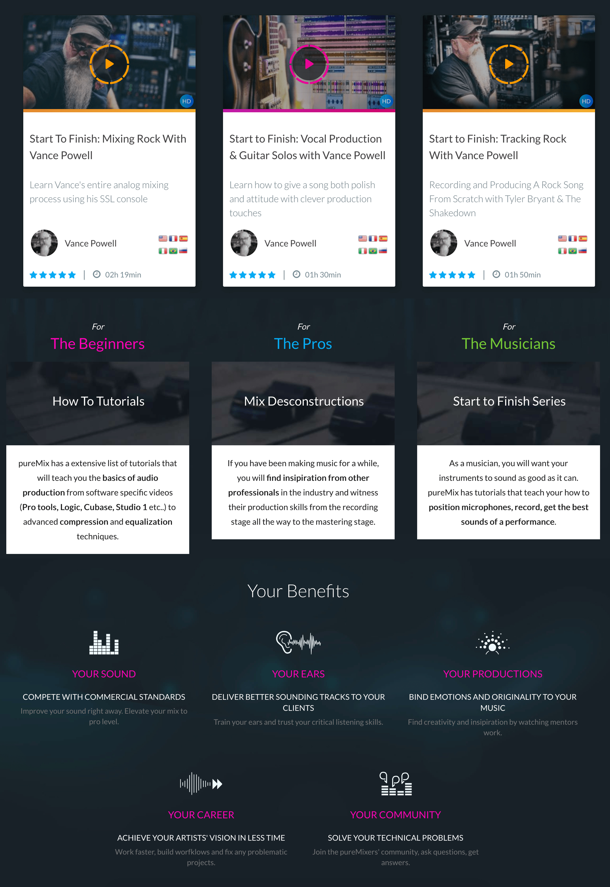
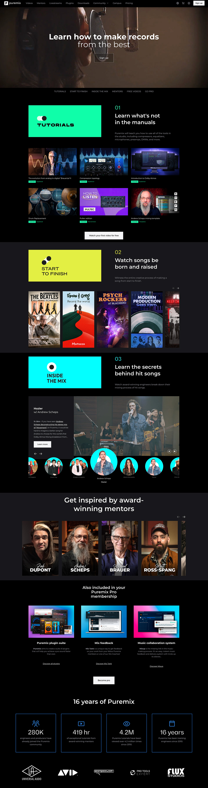

Context
Founded in 2010, Puremix is a subscription platform for audio engineers — hundreds of tutorial videos on mixing, mastering, recording and production. It had become the reference in its niche, but resting on past success had left it vulnerable.
Puremix wasn't just one product — it was a house of brands: Puremix (video streaming), Mixup.audio (collaboration), and Process.audio (plugins). The three products existed in parallel but felt completely disconnected to users.
Research
100+ survey responses from current members.
How users watch videos
Key insight: The core user behavior is search-first, not browse-first. This completely changed how we approached navigation and content discovery.
Homepage redesign
The old homepage didn't explain what Puremix was. New visitors couldn't understand the product within seconds. The redesign started with a clear value proposition above the fold, a unified navigation, and each content category presented as a distinct brand.

Homepage sections
Each content category — Tutorials, Start to Finish, Inside the Mix — was given its own visual identity and featured section on the homepage. The mentor section and product suite were also surfaced to drive engagement and upgrade conversion.

Library redesign
The library was the core of the product — but it was a flat list with no hierarchy. Users who came search-first couldn't quickly find what they needed. Each content category got its own dedicated page with a strong visual identity, search, and filtering.
Takeaways
When users can't explain what your product does in one sentence, you have a positioning problem — not a design problem. The redesign started with words before pixels.
The instinct was a beautiful homepage feed. The data said users come with a specific question. That completely changed the navigation and categorization approach.
The most sustainable way to reduce churn wasn't more video production — it was giving members reasons to engage with each other at lower cost.
Three good products that felt like three different companies. The redesign's biggest unlock wasn't any single feature — it was making the relationship between them visible.